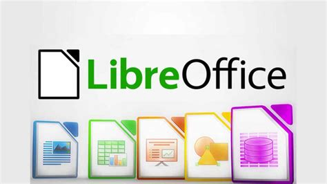

LibreOffice
Descripción
LibreOffice es una suite de productividad de oficina que incluye aplicaciones para procesamiento de texto, hojas de cálculo, presentaciones, dibujo y bases de datos. Es una bifurcación del proyecto OpenOffice.org y es desarrollado por The Document Foundation.
Características Principales
- Writer: Procesador de textos.
- Calc: Hoja de cálculo.
- Impress: Presentaciones.
- Draw: Dibujo y diagramación.
- Base: Gestión de bases de datos.
- Math: Editor de fórmulas matemáticas.
Impacto
LibreOffice es una alternativa libre y gratuita a suites de oficina comerciales como Microsoft Office. Es ampliamente utilizado en entornos educativos, gubernamentales y empresariales, proporcionando herramientas poderosas sin costo alguno.